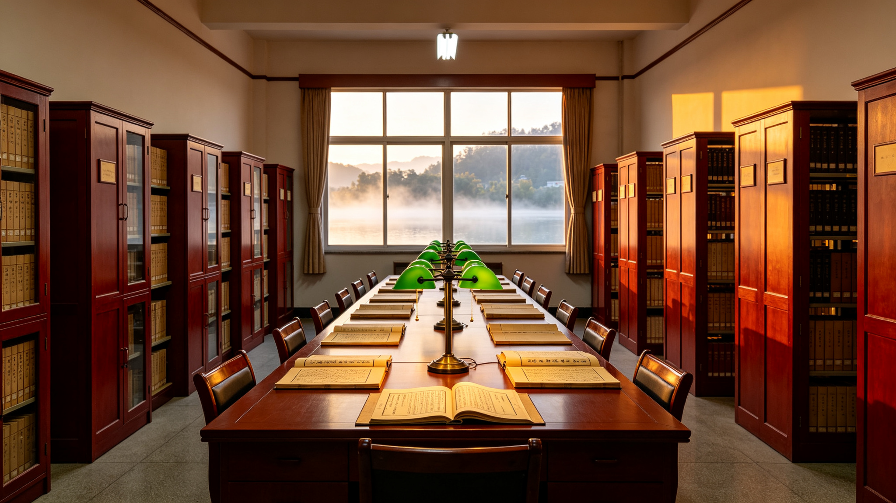

本馆概况
馆情简介
本馆以"存史、资政、育人"为宗旨，承担怀安地情资料的收集、保藏、研究与公共服务职能。设阅览厅、特藏库、方志展厅、数字化工作室各一处，总面积约 2400 ㎡。
- 机构性质
- 公益一类文化机构，隶属怀安县地方志编纂委员会办公室
- 建馆时间
- 1996 年，原址为县文化馆旧楼；2011 年迁入现址
- 场馆布局
- 阅览厅、特藏库、方志展厅、数字化工作室各一处

数字化工作室负责馆藏文献的扫描、OCR 与全文入库，近年陆续完成民国地契、老照片、历年洪水档案等专题补录。
归档整理稿 · 林知夏
- 机构性质
- 公益一类文化机构，隶属怀安县地方志编纂委员会办公室。
- 建馆时间
- 1996 年，原址为县文化馆旧楼；2011 年迁入现址怀安大道 9 号。
- 场馆布局
- 设阅览厅、特藏库、方志展厅、数字化工作室各一处，总面积约 2400 ㎡。
- 开放时间
- 周二至周日 9:00—17:00（周一闭馆，法定节假日另行公告）。
- 馆藏总量
- 志书、年鉴、旧志影印、专题史料及音像档案逾 12.4 万件。
本馆以"存史、资政、育人"为宗旨，承担怀安地情资料的收集、保藏、研究与公共服务职能。数字化工作室负责馆藏文献的扫描、OCR 与全文入库，近年陆续完成民国地契、老照片、历年洪水档案等专题补录。
[馆舍实景：阅览厅一排排枣红色档案柜，窗外是怀水河泛起的晨雾。]